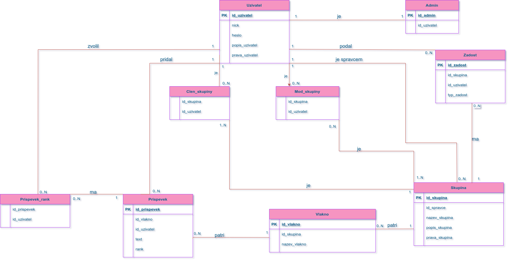

Varianta termínu - 3. Sociální sí»: diskuse v diskusních skupinách
- Autoøi
- Jan Dole¾el
xdolez81@stud.fit.vutbr.cz -
implementace databázové vrstvy, implementace aplikaèní vrstvy a gui
- Michal ©tábel
xstabe00@stud.fit.vutbr.cz -
implementace aplikaèní vrstvy a gui
- URL aplikace
- http://www.stud.fit.vutbr.cz/~xdolez81/IIS
- (pokud má aplikace více vstupních stránek, napi¹te obdobnì dal¹í URL)
U¾ivatelé systému pro testování
Uveïte prosím existující zástupce v¹ech rolí u¾ivatelù.
| Login | Heslo | Role |
|---|
| admin | admin | Administrátor |
| manager | manager | Správce skupiny |
| mod | mod | Moderátor skupiny |
| clen | clen | Èlen skupiny |
| john | john | Pouze registrovaný u¾ivatel |
(Diagram pøípadù u¾ití není nutné vkládat, pokud IS implementuje role a pøípady u¾ití definované zadáním.)
Implementace
Struèná dokumentace k implementaci, která popisuje, které èásti projektu (napø. PHP skripty) implementují jednotlivé pøípady pou¾ití.
- database.php - tøída pro pøipojení a práci s databází
- functions_john.php - generování html výstupu (pou¾ívaný v následujících skriptech)
- index.php - domovská stránka
- users_john.php - prohlí¾ení v¹ech existujících profilù u¾ivatelù
- profile_john.php - zobrazení profilu urèitého u¾ivatele (editace profilu pro majitele, vytváøení nových skupiny)
- groups_john.php - prohlí¾ení v¹ech existujících profilù skupin
- group_john.php - zobrazení profilu urèité skupiny (editace skupiny pro správce, vytváøení nových vláken atd.)
- thread_john.php - zobrazení obsahu vlákna
- login_john.php - pøihla¹ovací stránka
- logout_john.php - odhlá¹ení u¾ivatele
- register_john.php - registrace nového u¾ivatele
- styles_john.css - kaskádové styly
Databáze
Zde vlo¾te grafické schéma relaèní databáze (tabulek v databázi).

Instalace
Struènì popi¹te:
- postup instalace na server,
- Staèí rozbalit xdolez81.zip a vytvoøit databázi
- softwarové po¾adavky (verze PHP apod.),
- Verze PHP 5.6.33 (cli) (built: Jan 8 2018 15:45:44) na serveru Eva je dostaèující
- jak rozbalit, konfigurovat, inicializovat databázi, ...
- Rozbalí se .zip do www slo¾ky
- Databáze se inicializuje skriptem database_CREATE.txt
Známé problémy
Zde popi¹te, které body zadání nejsou implementovány a z jakého dùvodu. Napø. „Z èasových dùvodù nebyla implementována správa u¾ivatelù.” Pomù¾ete tím zrychlit hodnocení, kdy¾ neimplementované funkce nebudeme muset dlouze hledat.
- Nefunguje registrace do skupin a ¾ádost o post moderátora (u¾ivatelé budou do skupiny pøidáni manuálnì - pro demonstraci funkènosti práv prohlí¾ení atd.)
- Není implementováno promazávání pøíspìvkù pro admina, správce, moderátora
- Chatování ve vláknu funguje tak, ¾e pokud chcete zobrazit nové pøíspìvky, tak je první tøeba nìjaký pøíspìvek zaslat, nebo stisknout refresh (tlaèítko vedle zaslání zprávy), pro neregistrovaného u¾ivatele F5
- Dùvodem v¹ech problémù je moje podcenìní èasové nároènosti na tvorbu projektu a moje neschopnost